Elementos, herramientas y fases que intervienen en el desarrollo de un programa informático, desde su concepción hasta su puesta en funcionamiento.
Hardware. Componentes físicos que se pueden ver y tocar: monitor, teclado, ratón, placa base, memoria RAM, microprocesador, disco duro, etc.
Software. Parte lógica del ordenador que no se puede tocar. Comprende el conjunto de programas y aplicaciones que actúan sobre el hardware y facilitan al usuario la realización de diferentes tareas.
RAE. «El conjunto de programas, instrucciones y reglas informáticas para ejecutar ciertas tareas en una computadora.»
IEEE Estándar 729. «El conjunto de los programas de cómputo, procedimientos, reglas, documentación y datos asociados que forman parte de las operaciones de un sistema de computación.»
En cualquier caso, el software engloba programas y datos almacenados en un ordenador, encargados de dar instrucciones al hardware o de comunicarse con otro software.
El software se divide en categorías según el tipo de tarea que realiza, el método de distribución y la licencia bajo la cual se distribuye.
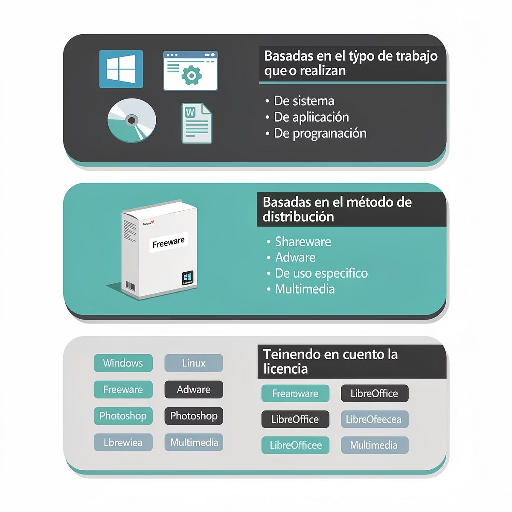
Software de sistema. Permite que el hardware funcione. Incluye sistemas operativos, controladores de dispositivo, herramientas de diagnóstico y optimización.
Software de aplicación. Ayuda a realizar tareas específicas: aplicaciones ofimáticas, software educativo, médico, contabilidad, diseño asistido (CAD), etc.
Software de programación. Proporciona herramientas al programador: entornos de desarrollo integrados (IDE) con interfaz gráfica avanzada (GUI).
Shareware. Evaluación gratuita por tiempo limitado. Requiere pago para uso completo. Ej.: WinRAR, ZoneAlarm, Paint Shop Pro.
Freeware. Distribución sin cargo. Incluye licencia con restricciones: no modificar ni vender. No confundir con software libre.
Adware. Descarga publicidad automáticamente al ejecutarse. Al comprar la licencia se elimina la publicidad.
Multimedia. Presenta textos, gráficos, sonidos y animaciones de forma integrada. Sirve para crear música, vídeos e imágenes animadas.
Uso específico. Desarrollado para resolver un problema concreto de una organización. Requiere experto informático para su creación o adaptación.
Una licencia de software es un contrato entre el desarrollador y el usuario que define con precisión los derechos y deberes de ambas partes.
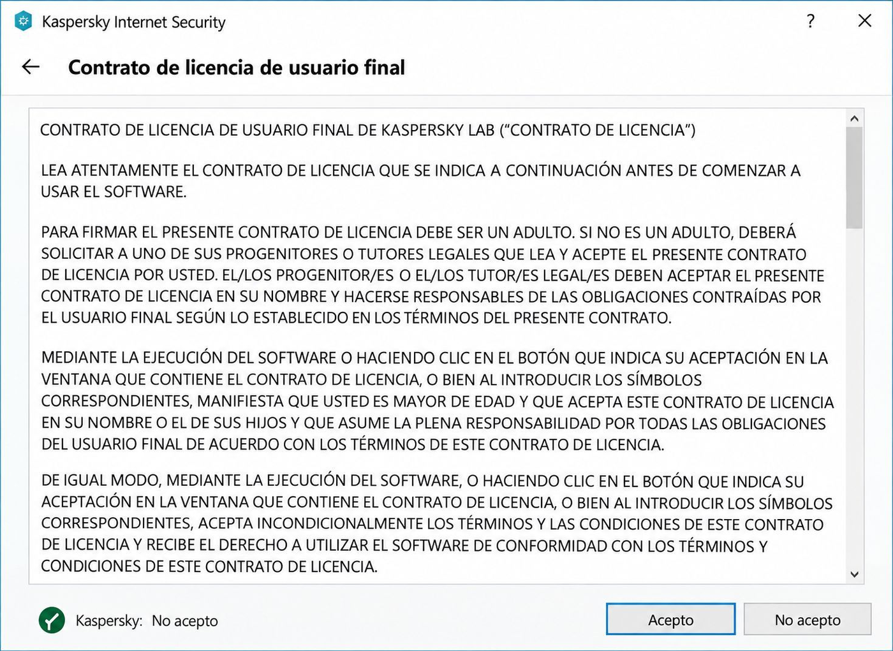
Software libre. El autor cede libertades básicas: usar, estudiar, distribuir y mejorar el programa. Requiere acceso al código fuente. Licencia más usada: GPL.
Software propietario. Distribuido en formato binario sin acceso al código fuente. El propietario prohíbe redistribución, modificación, copia o uso múltiple. Variantes: Freeware y Shareware.
Dominio público. Carece de licencia o se desconoce al autor. Puede usarse libremente por cualquier persona, incluso para desarrollar ofertas propietarias.
GNU General Public License (GPL). La licencia más utilizada en software libre. Da derecho al usuario a usar y modificar el programa con la obligación de hacer públicas las versiones modificadas.
Ejemplo: Moodle. Moodle es un paquete de software libre distribuido bajo licencia GPL. Permite redistribuirlo y/o modificarlo bajo los términos de la GNU GPL (versión 3 o posterior), sin ninguna garantía implícita de comercialización.
Más información sobre licencias compatibles con GPL: gnu.org/licenses
Software libre ≠ Freeware. «Free» en inglés significa tanto «gratis» como «libre».
El estándar ISO/IEC 12207-1 define el ciclo de vida del software como: «Un marco de referencia que contiene los procesos, actividades y tareas involucradas en el desarrollo, explotación y mantenimiento de un producto de software, abarcando desde la definición de requisitos hasta la finalización de su uso.»
Cada etapa tiene como entrada documentos de etapas anteriores y produce documentos de salida. La documentación es una tarea esencial en cada etapa.
| Fase | ¿Qué se hace? | Personas/roles que intervienen principalmente |
|---|---|---|
| 1. Análisis | Se estudia el problema, las necesidades del cliente y los requisitos que debe cumplir el software. | Product Owner (PO), analista de requisitos, cliente/usuario, jefe de proyecto |
| 2. Diseño | Se decide cómo se va a construir la solución: arquitectura, base de datos, interfaz, tecnologías, estructuras de datos… | Arquitecto de software, analista, diseñador UX/UI, desarrolladores, administrador de BBDD |
| 3. Codificación | Se transforma el diseño en código utilizando el lenguaje de programación elegido. | Programadores/desarrolladores (backend, frontend, full-stack…), desarrolladores de BBDD |
| 4. Pruebas | Se comprueba que el software funciona correctamente y cumple los requisitos establecidos. | QA / testers, desarrolladores, analistas y usuarios |
| 5. Mantenimiento | Se corrigen errores, se adapta el software a cambios y se incorporan mejoras o nuevas funcionalidades después de su puesta en producción. | Desarrolladores, equipo de mantenimiento/soporte, QA, PO, administrador de sistemas/DevOps y usuarios |
Existen varios modelos de ciclo de vida. Es importante analizar las características del proyecto para elegir el más adecuado.
Cascada. Etapas secuenciales con revisión al finalizar cada una.
Incremental. Entrega el software en partes pequeñas pero utilizables llamadas incrementos.
Espiral. Combina cascada con construcción de prototipos, incorporando análisis de riesgos en cada ciclo.
Las etapas tienen un orden estricto: para comenzar una etapa es necesario finalizar la anterior. Permite iteraciones: si se requiere volver a una etapa anterior, hay que recorrer de nuevo el resto de etapas.
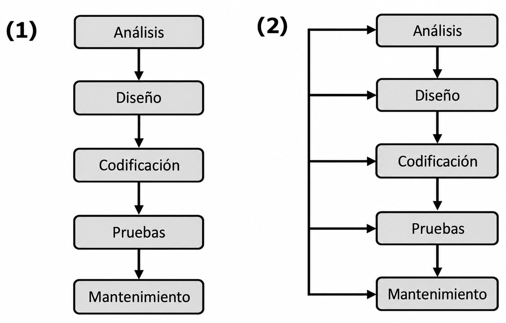
¿Cómo funciona? Si durante el Diseño se detectan fallos en los requisitos, se retorna a Análisis, se realizan ajustes y se continúa con el Diseño. Se puede volver a la etapa anterior o incluso varias etapas atrás.
Variante más utilizada. Esta variante con realimentación es la más común en la práctica, ya que los requisitos raramente permanecen estables durante todo el desarrollo.
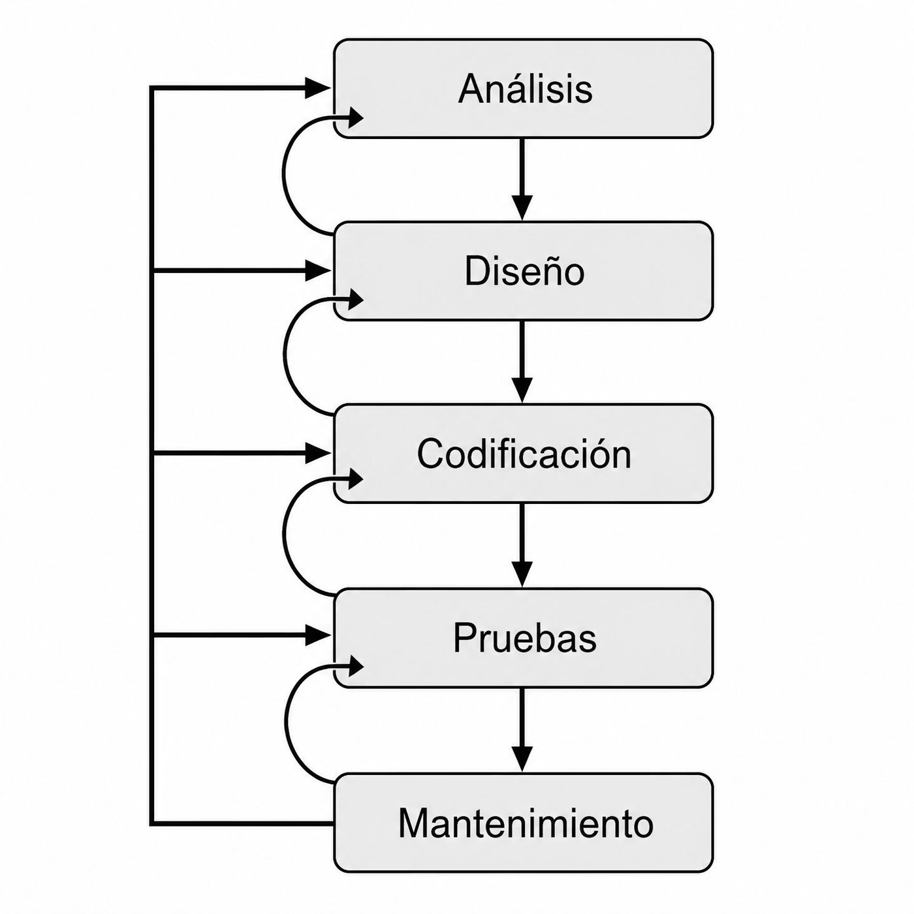
Ventajas
Inconvenientes
Se recomienda cuando:
El software evoluciona con el tiempo. Los requisitos del usuario y del producto cambian conforme se desarrolla. La competencia en el mercado obliga a lanzar versiones cada vez más completas en lugar de esperar al producto final. Los modelos evolutivos permiten desarrollar versiones incrementales hasta llegar al producto deseado.
Basado en varios ciclos cascada aplicados repetidamente. Entrega el software en partes pequeñas pero utilizables llamadas incrementos. Cada incremento se construye sobre el anterior. Ejemplo: un procesador de textos desarrollado por funciones básicas, luego corrección ortográfica, luego paginación avanzada, etc.
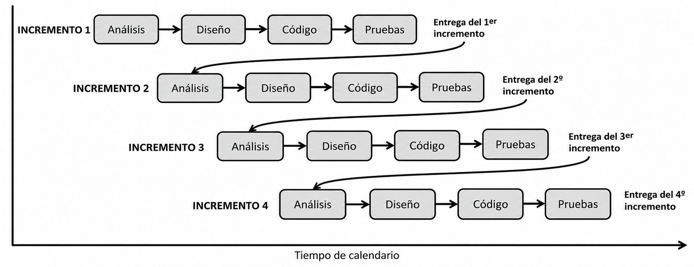
Ventajas
Inconvenientes
Se recomienda cuando:
Combina el Modelo en Cascada con el modelo iterativo de construcción de prototipos. El proceso se representa como una espiral donde cada ciclo produce una versión incremental. La diferencia clave con el modelo incremental es que en cada ciclo se realiza un análisis de riesgos.
Cuatro ciclos: el ciclo interno genera el concepto de operaciones; el segundo produce la especificación de requisitos; el tercero realiza el diseño del producto; el cuarto produce diseño detallado, implementación y pruebas.
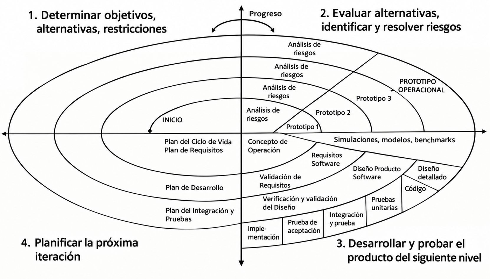
Ventajas
Inconvenientes
Se recomienda para:
El modelo de construcción de prototipos crea un producto intermedio para clarificar requisitos antes del producto final.
Independientemente del modelo de ciclo de vida elegido, hay una serie de etapas que se deben seguir para construir un proyecto de calidad: Análisis, Diseño, Codificación, Pruebas, Documentación, Explotación y Mantenimiento.
Lo más importante del éxito de un proyecto software es entender el problema que se necesita resolver. En esta fase se analizan y especifican los requisitos o capacidades que el sistema debe tener.
Requisitos funcionales. Describen con detalle la función que realiza el sistema, cómo reacciona ante determinadas entradas y cómo se comporta en situaciones particulares.
Requisitos no funcionales. Tratan sobre las características del sistema: fiabilidad, mantenibilidad, sistema operativo, plataforma hardware, restricciones y limitaciones.
Entrevistas. Técnica más tradicional. Requiere conocimientos de psicología para comunicarse eficazmente con el cliente.
JAD / JRP. Desarrollo/Planificación Conjunta de Aplicaciones. Entrevistas estructuradas aplicables a grupos de personas con roles definidos.
Brainstorming. Reuniones en grupo para generar ideas desde diferentes puntos de vista. Adecuado al principio del proyecto.
Prototipos. Versión inicial del sistema para clarificar puntos y demostrar conceptos. Sirve como base para añadir más funcionalidades.
Casos de uso (UML). Técnica definida en UML. Basada en escenarios que describen cómo se usa el software en una situación determinada.
DFD — Diagrama de Flujo de Datos. Representa el flujo de datos entre procesos (burbujas), entidades externas (rectángulos), almacenes (líneas paralelas) y flujos (flechas).
DFC — Diagrama de Flujo de Control. Similar al DFD pero muestra el flujo de control en lugar de datos. Se representa con flechas discontinuas.
DTE — Diagrama de Transición de Estados. Representa cómo se comporta el sistema ante sucesos externos e indica qué acciones se llevan a cabo.
DER — Diagrama Entidad/Relación. Usado para representar los datos y la forma en que se relacionan entre ellos.
DD — Diccionario de Datos. Descripción detallada de los datos utilizados por el sistema representados en los DFDs.
Una vez identificados los requisitos, se traduce lo que hay que hacer en una representación de cómo se va a resolver el problema.
Diseño Estructurado. Basado en el flujo de los datos a través del sistema. Produce un modelo con 4 elementos: datos, arquitectónico, interfaz y procedimental.
Diseño Orientado a Objetos. El sistema se entiende como un conjunto de objetos con propiedades y comportamientos. Los objetos interactúan de manera formal entre sí.
Diseño de datos. Transforma el modelo de dominio en estructuras de datos para implementar el software.
Diseño arquitectónico. Representa la estructura de los componentes del software, sus propiedades e interacciones.
Diseño de interfaz. Describe cómo se comunica el software consigo mismo, con otros sistemas y con los usuarios.
Diseño procedimental. Transforma los elementos estructurales en una descripción procedimental de los componentes.
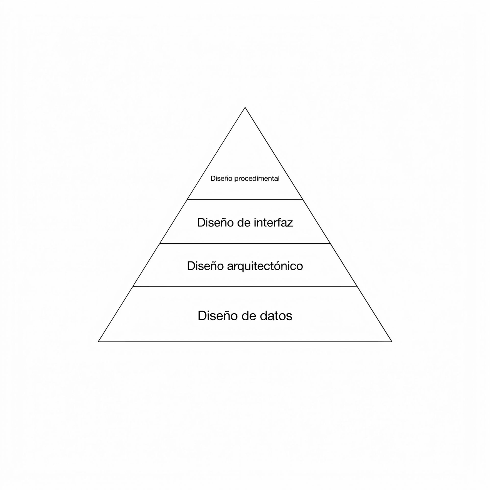
Los fundamentos del diseño a nivel de componentes se basan en tres construcciones lógicas con las que puede formarse cualquier programa:
Secuencial. Implementa los pasos del proceso de forma ordenada, uno tras otro.
Condicional. Permite seleccionar un proceso u otro a partir de la evaluación de una condición lógica (if-then-else, selección múltiple).
Repetitiva. Proporciona los bucles: Repetir-hasta (ejecuta al menos una vez) y Hacer-mientras (comprueba la condición antes de ejecutar).
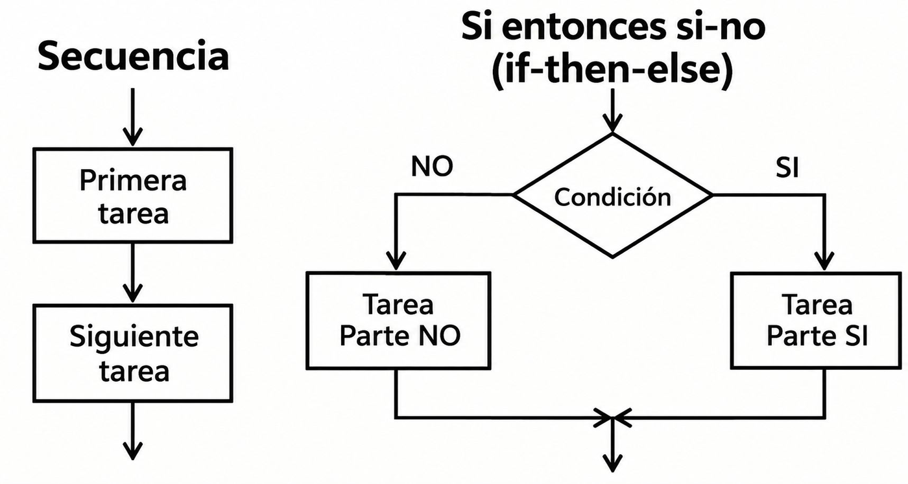
Construcciones repetitivas
Repetir-hasta: ejecuta la tarea del bucle primero y después comprueba la condición. La tarea se realiza al menos una vez.
Hacer-mientras: comprueba la condición primero y después ejecuta la tarea repetidamente mientras la condición se cumpla.
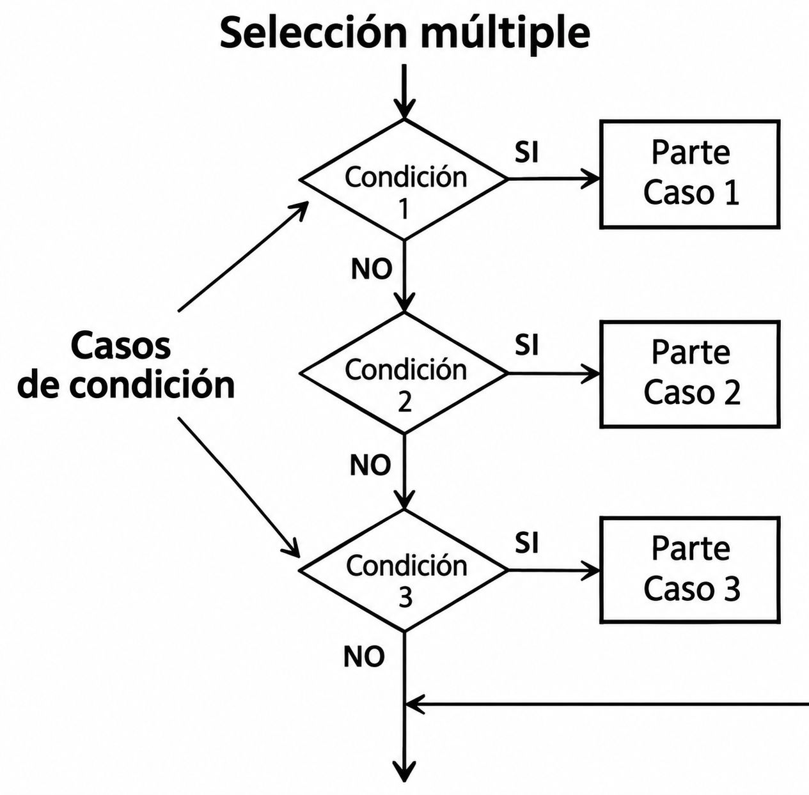
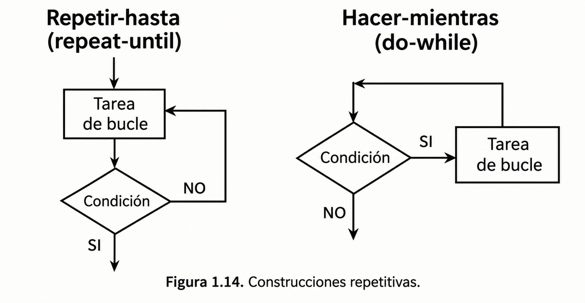
El DOO parte de un análisis orientado a objetos (AOO) donde se definen todas las clases, operaciones, atributos, relaciones y comunicaciones entre clases. Define 4 capas de diseño:
Para el análisis y diseño OO se utiliza UML (Unified Modeling Language), estándar de facto de las metodologías orientadas a objetos.
El programador recibe las especificaciones del diseño y las transforma en instrucciones escritas en un lenguaje de programación: el código fuente. Debe conocer la sintaxis del lenguaje utilizado. En cualquier proyecto en equipo deben existir normas de codificación y estilo claras y homogéneas para facilitar la corrección y el mantenimiento.
Una vez generado el código fuente, un compilador lo traduce a código objeto. Un enlazador conecta el código objeto con librerías para construir el código ejecutable. Finalmente se realizan pruebas para verificar que cumple las especificaciones del diseño.
Verificación. Comprueba si se está construyendo el producto correctamente: si el software implementa correctamente una función específica.
Validación. Comprueba si el producto es correcto: si el software construido se ajusta a los requisitos del cliente.
Un caso de prueba es un documento que especifica los valores de entrada, la salida esperada y las condiciones previas para la ejecución de la prueba. Una prueba tiene éxito si descubre un error no detectado hasta entonces.
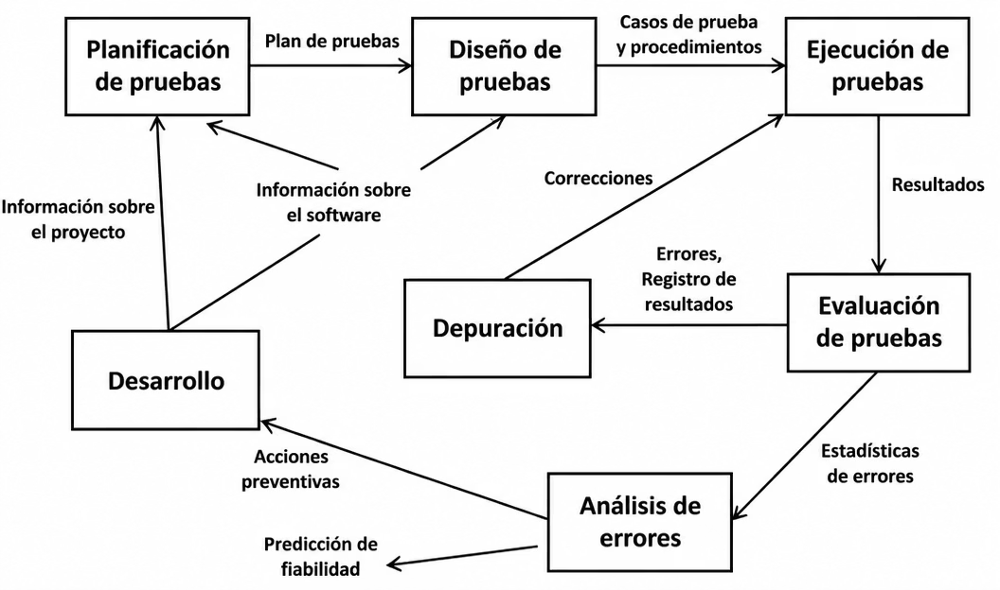
Caja Blanca. Se centran en validar la estructura interna del programa. Necesitan conocer los detalles procedimentales del código.
Caja Negra. Se centran en validar los requisitos funcionales sin fijarse en el funcionamiento interno. Solo necesitan conocer la funcionalidad.
Estas pruebas no son excluyentes y se pueden combinar para descubrir diferentes tipos de errores.
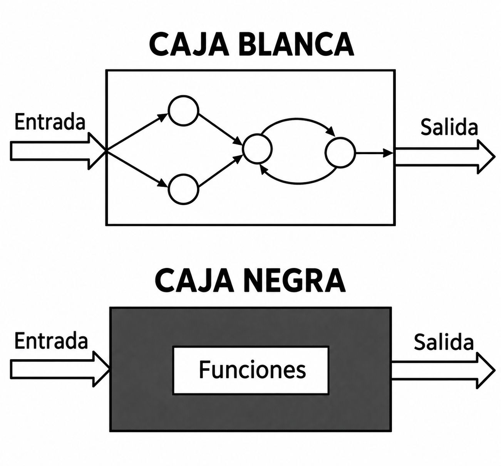
Todas las etapas del desarrollo deben quedar perfectamente documentadas. La documentación se divide en dos clases:
Documentación del proceso. Registra el proceso de desarrollo y mantenimiento: planes, estimaciones, horarios, normas de implementación y uso de recursos.
Documentación del producto. Describe el producto desarrollado: documentación del sistema (técnica) y documentación del usuario (orientada al uso).
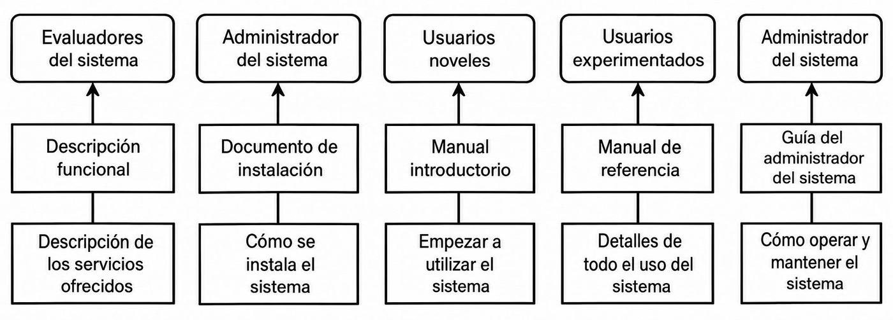
Una vez realizadas todas las pruebas y documentadas todas las etapas, se lleva a cabo la instalación y puesta en marcha del producto software en el entorno de trabajo del cliente.
Estrategia de implementación. Plan con normas para las actividades y procedimientos para registrar y solucionar problemas.
Pruebas de operación. Para cada release se llevan a cabo pruebas de funcionamiento antes de liberar el software para uso operativo.
Soporte al usuario. Se proporciona asistencia y consultoría a los usuarios cuando la soliciten, registrando y supervisando las peticiones.
Definido por la Norma IEEE 1219 como la modificación de un producto de software después de la entrega para corregir fallos, mejorar el rendimiento o adaptar el producto a un entorno modificado.
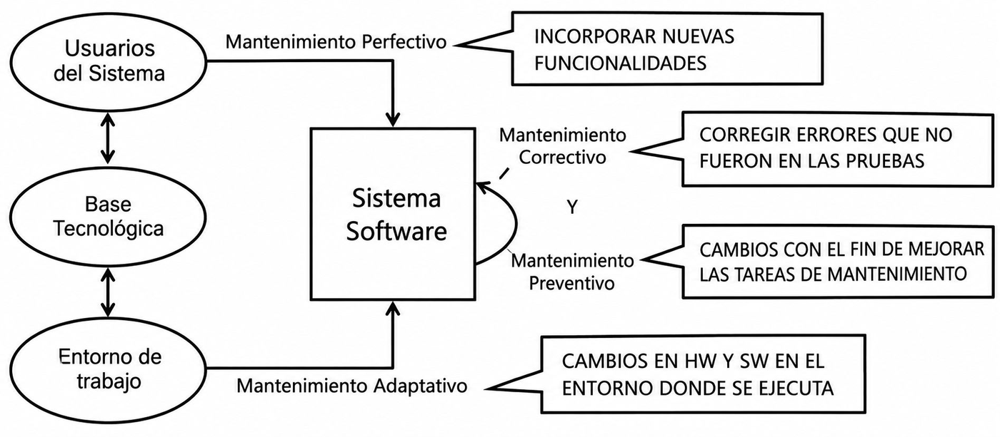
Adaptativo. Modificación del producto por cambios en el hardware o software del entorno de ejecución. El más usual por los rápidos cambios tecnológicos.
Correctivo. Corrige los fallos descubiertos después de la entrega del producto, a pesar de las pruebas realizadas anteriormente.
Perfectivo. Incorpora nuevas funcionalidades y mejoras en el rendimiento o la mantenibilidad más allá de los requisitos originales.
Preventivo. Modifica el producto sin alterar sus especificaciones para facilitar futuras tareas de mantenimiento. Incluye reingeniería del software.
Un programa informático es un conjunto de instrucciones escritas en un lenguaje de programación que, aplicadas sobre un conjunto de datos, resuelven un problema o parte del mismo. Para ejecutarse, debe traducirse a lenguaje máquina mediante un compilador y cargarse en la memoria principal para que el procesador ejecute una a una todas las instrucciones.
Para ejecutar un programa se necesitan los recursos hardware del ordenador. En una arquitectura Von Neumann, la CPU está formada por:
Unidad de Control (UC). Interpreta y ejecuta las instrucciones máquina almacenadas en memoria y genera las señales de control necesarias.
Unidad Aritmético-Lógica (UAL). Efectúa operaciones de cálculo y comparaciones, y toma decisiones lógicas bajo supervisión de la UC.
Registros de trabajo. Almacenamiento interno de la CPU donde se guarda información temporal.
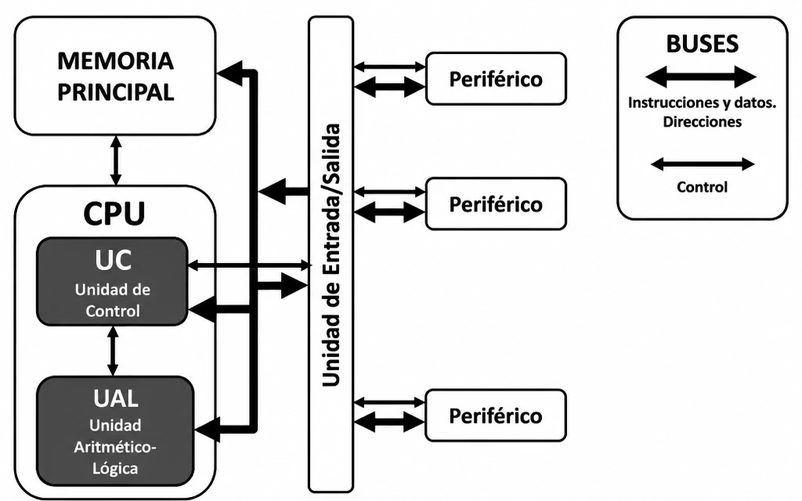
Contador de Programa (CP). Contiene la dirección de la siguiente instrucción a ejecutar.
Registro de Instrucción (RI). Contiene el código de la instrucción a ejecutar: código de operación y dirección del operando.
Registro de Dirección (RDM). Contiene la dirección de una posición de memoria donde se encuentra o almacenará la información.
Registro de Intercambio (RIM). Recibe o envía la información contenida en la posición apuntada por el RDM.
Decodificador (DI). Extrae y analiza el código de operación del RI y genera las señales de control para ejecutar la instrucción.
Fase de Fetch. Localizar y transferir la instrucción.
Fase de Execute. Realizar las acciones indicadas.
Un lenguaje de programación es un conjunto de caracteres, las reglas para su combinación y las reglas que definen sus efectos cuando son ejecutadas por un ordenador. Consta de tres elementos:
Léxico (alfabeto). Conjunto de símbolos permitidos en el lenguaje.
Sintaxis. Reglas que indican cómo realizar las construcciones con los símbolos del lenguaje.
Semántica. Reglas que determinan el significado de cualquier construcción del lenguaje.
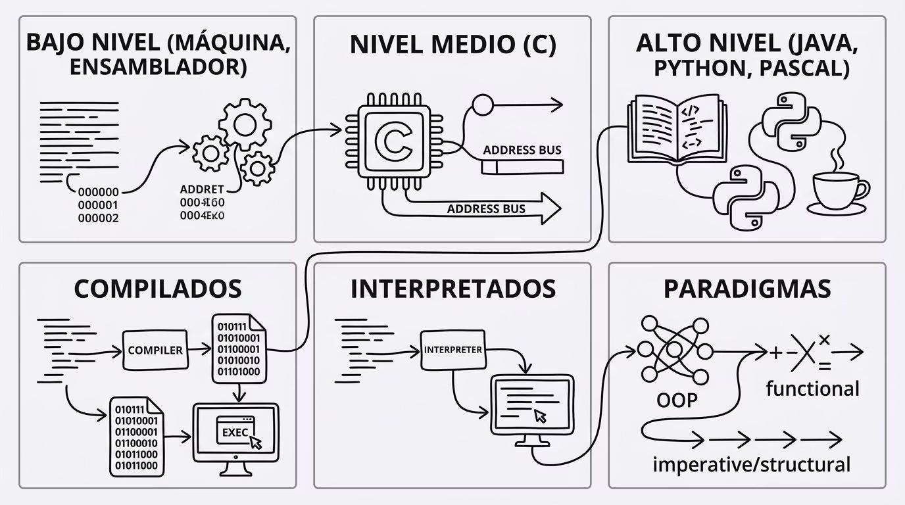
Compilador. Lee un programa en lenguaje fuente y lo traduce a un programa equivalente en lenguaje destino. Si hay errores, no genera el programa objeto. El programa compilado es más rápido en ejecución.
Intérprete. Ejecuta directamente las operaciones del programa fuente con las entradas del usuario. Cada instrucción se interpreta y traduce en tiempo de ejecución. Elimina la necesidad de recompilar tras cada modificación.
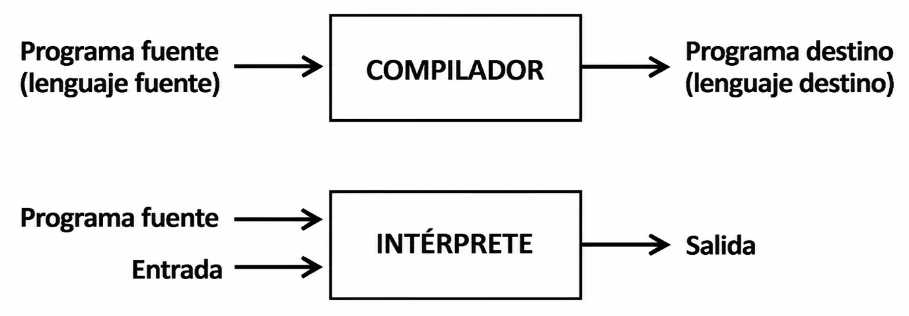
Los procesadores de Java combinan ambos enfoques: el código fuente (.java) se compila a bytecodes (.class), un formato intermedio independiente de la plataforma, que luego es interpretado por la Máquina Virtual Java (JVM).
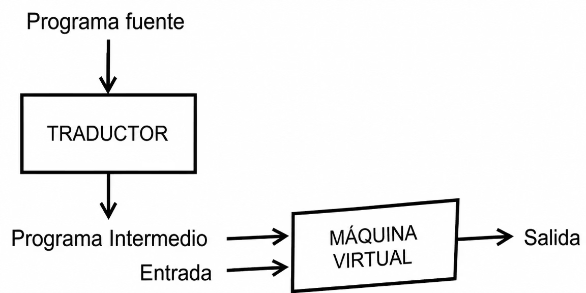
Lenguajes imperativos. Sentencias que establecen explícitamente cómo manipular la información. La sentencia principal es la asignación. Ej.: Basic, Fortran, Pascal, C, Java, C#.
Lenguajes funcionales. Basados en el concepto matemático de función. No existe la asignación; la computación se realiza mediante evaluación de expresiones. Ej.: Lisp, Scheme, Haskell.
Lenguajes lógicos. Un cálculo es el proceso de encontrar qué elementos cumplen una relación definida. Los programas son bases de datos de declaraciones lógicas. Ej.: Prolog.
Un programa estructurado usa las tres construcciones lógicas y puede leerse secuencialmente. La programación modular divide el programa en módulos con entrada y salida definidas. Ventajas: varios programadores trabajan simultáneamente, los módulos son reutilizables y es menos costoso resolver problemas aislados. Ej.: Pascal, C, Fortran.
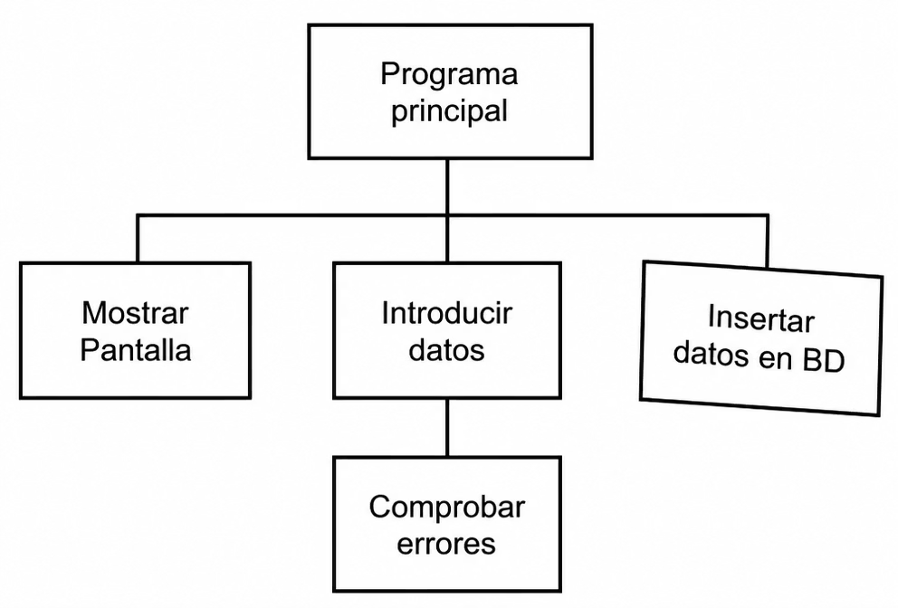
Un programa está compuesto por objetos (estructura de datos + métodos). Los objetos se comunican mediante paso de mensajes. Una clase es una plantilla para crear objetos. Ventajas: facilita la reutilización de código, el trabajo en equipo y el mantenimiento. Ej.: C++, Java, Smalltalk.
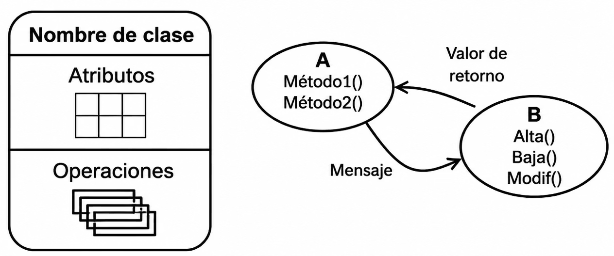
El compilador traduce el código fuente al código objeto. Si encuentra errores (puntuación, sentencias mal escritas, tipos incompatibles, variables no definidas), no genera el código objeto. El enlazador inserta las funciones de librería necesarias para producir el programa ejecutable.
suma = x + 2 genera 5 tokens.Una máquina virtual es una aplicación software que ejecuta programas como si fuese una máquina real. Se clasifican en dos categorías:
Máquinas Virtuales de Sistema. Permiten ejecutar varias máquinas virtuales con distintos sistemas operativos sobre una misma máquina física. Ej.: VMware Workstation, VirtualBox.
Máquinas Virtuales de Proceso. Se ejecutan como un proceso normal dentro de un SO. Proporcionan un entorno de ejecución independiente de la plataforma hardware. Ejemplo más conocido: JVM (Java Virtual Machine).
El código fuente (.java) se compila con javac a bytecodes (.class). La JVM interpreta los bytecodes y los traduce a código binario para el procesador. Los ficheros .class pueden ejecutarse en Windows, Linux, Mac OS, Solaris, etc.
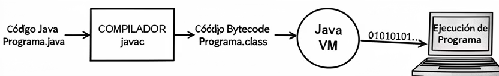
Las tareas principales de la JVM son: reservar y liberar espacio en memoria, comunicarse con el sistema huésped para acceder a dispositivos hardware, y vigilar el cumplimiento de las normas de seguridad. La principal desventaja es que son más lentos que los lenguajes completamente compilados.